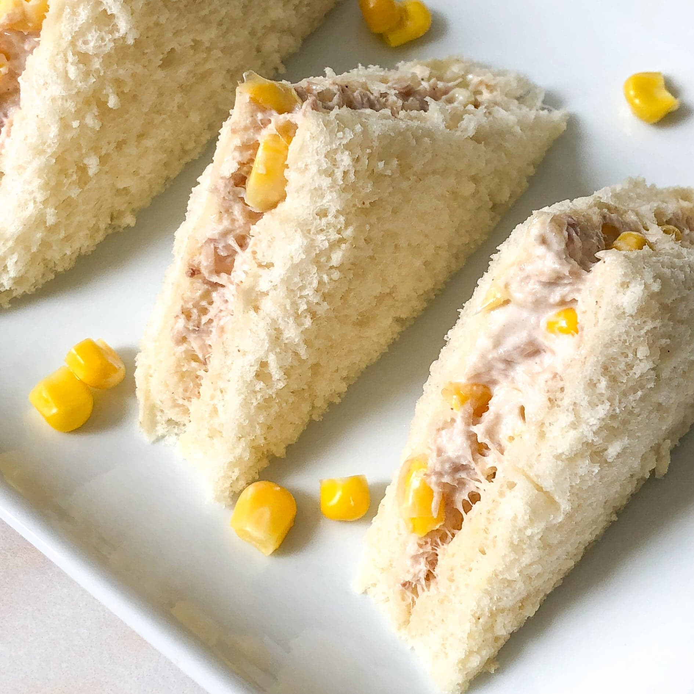

Tuna-Mayo-Sweetcorn-Sandwhich-Recipe
Odin-Recipes

Description
Sanwhich with Tuna Mayonaise and Sweetcorn
Ingredients
- Tuna in springwater - 1 can
- Sweetcorn - 1 can
- Mayonaise
- Bread
Steps
- Open tuna can and press water out of the tuna then add to a bowl
- Open sweetcorn can and empty water from it and add to same bowl
- Add mayonaise and mix
- Put onto bread and enjoy!